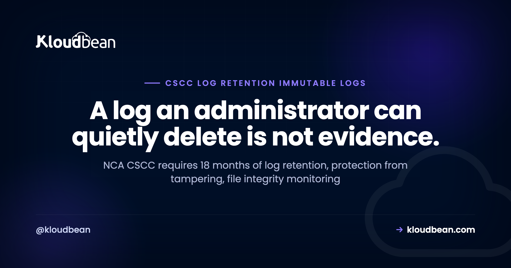

CSCC 18-Month Log Retention: Immutable Logging for Saudi Critical Systems

Of all the CSCC controls, the logging subdomain is the one teams underestimate most. It looks like a checkbox, "turn on logs", and then an auditor asks whether the logs can be altered, whether file changes raise an alert, and whether you can still produce records from fourteen months ago. Those are three different requirements with three different technical answers. This is a walk through CSCC subdomain 2-11, what each control actually asks for, and how to build a logging setup that holds up.
At least 18 months. Control 2-11-2 sets the retention floor for critical systems event logs, in line with relevant legislative and regulatory requirements. Retention alone isn't enough: 2-11-1-5 requires logs to be maintained and protected against unauthorised access, tampering, illegitimate modification, and deletion, so you need write-once storage with a retention lock rather than an ordinary bucket an administrator could clear.
What subdomain 2-11 actually requires
The controls build on the matching ECC control rather than replacing it. In order:
| Control | Requirement |
|---|---|
| 2-11-1-1 | Activate cybersecurity event logs on all technical components of critical systems |
| 2-11-1-2 | Activate and monitor alerts and event logs for file integrity management |
| 2-11-1-3 | Monitor and analyse user behaviour |
| 2-11-1-4 | Monitor critical systems security events around the clock |
| 2-11-1-5 | Maintain and protect logs, including time, date, ID, and affected system |
| 2-11-2 | Retain logs for a minimum of 18 months |
Read 2-11-1-1 carefully. It says all technical components, and the CSCC component list is broad: network devices, firewalls, IDS and IPS, databases, storage, middleware, servers and operating systems, applications, and encryption devices. A common gap is logging the application and the servers but not the database's data-access events or the network layer.
18 months is longer than most defaults
This is where plans quietly fail. Cloud logging services typically retain logs for a default window measured in weeks or a single month, and then discard them. If nobody changes that, you are compliant on day one and non-compliant by month two, with no alert to tell you.
The fix is a dedicated log bucket with an explicit retention period rather than the default sink. Eighteen months means 548 days as a minimum, and it is worth configuring slightly above the floor so month-boundary arithmetic never puts you under it. Archive-class storage keeps the cost of that window reasonable, since old logs are written once and read rarely.
This is the first thing we set explicitly on a managed enterprise engagement, on a dedicated cloud account: retention configured at the bucket, archive export wired up, and the short default sink taken out of the path. Not because it's clever, but because it's the failure nobody notices until an auditor asks for month fourteen.
Retention is not the same as immutability
Two different controls, often conflated. Retention (2-11-2) is about how long records exist. Protection (2-11-1-5) is about whether anyone can change or remove them, and it names tampering, illegitimate modification, and deletion explicitly.
A bucket with a 548-day lifecycle rule satisfies the first and fails the second, because someone with the right permission can still delete the objects. What satisfies both is write-once-read-many storage with a retention lock applied, so the platform itself refuses deletion or modification before the period expires. That property is the difference between logs you keep and logs that count as evidence. If a privileged account could erase the trail of its own actions, an auditor is right to discount the whole log set.
Worth stating plainly: once a retention lock is applied, you cannot shorten it or delete the data early either. That is the point, and it is also a decision to make deliberately rather than discover later.
Write-once storage with bucket lock is what Kloudbean applies on enterprise engagements, and it lives on a dedicated cloud account rather than being a switch on a standard plan. The reason it has to sit at the platform layer is simple: if the control were implemented in your application, your application's credentials could undo it.
What a log line needs to contain
Control 2-11-1-5 specifies the log should include the details, giving time, date, ID, and affected system as examples. In practice, an event that can support an investigation carries at minimum:
- Timestamp, ideally from a synchronised source so records from different components line up.
- The identity that acted, whether a user or a service account.
- Source IP or origin of the request.
- The resource touched, and the action taken.
- The outcome, since a failed attempt is often more interesting than a successful one.
Structured, machine-readable output makes this far easier to query later. If your application still writes free-form text lines, our structured logging guide covers the shift, and the same principle applies well beyond Node.
File integrity monitoring
Control 2-11-1-2 asks for alerts and logs specifically for file integrity management. This is a distinct capability, not a byproduct of ordinary logging. An agent watches critical directories and binaries, and raises an alert when something changes unexpectedly. It is how you notice an unauthorised modification to a configuration file or a planted binary that no application log would mention.
Note the wording includes monitoring, not just activation. A file integrity alert that nobody reads satisfies the letter and misses the purpose. On enterprise engagements we run a FIM agent on the critical machines and route its alerts into the same policy set as firewall and IAM changes, so integrity events land where someone is already looking rather than in their own forgotten console.
Around-the-clock monitoring, and the honest boundary
Control 2-11-1-4 requires security events to be monitored around the clock. This is the control where responsibility genuinely splits, so it deserves a straight answer rather than a marketing one.
The infrastructure half can be built: log collection from every component, alert policies covering the events that matter (firewall changes, IAM changes, failed logins, virtual machine events, database anomalies), threat detection on access patterns to flag anomalies, and immutable storage underneath it all. That part is engineering and it can be delivered and maintained by a provider.
The other half is people. Investigating an alert, classifying its severity, escalating it, and reporting to the regulator needs a security operations centre, whether that is your own team or an MSSP. Detection infrastructure without human response does not satisfy 2-11-1-4 on its own. Kloudbean does take on SOC and SIEM work, but as a collaborative engagement scoped with the client rather than a fixed package, because the right shape depends on your team, your hours, and your escalation paths.
User behaviour monitoring
Control 2-11-1-3 asks for monitoring and analysis of user behaviour, which NCA's own glossary describes as tracking, collecting, and analysing user data to identify activity patterns and detect harmful or unusual behaviour. At the infrastructure layer you can get meaningful coverage of identity and access patterns, flagging anomalous administrative access. Full behavioural analytics across application activity generally needs a SIEM or a dedicated platform, so treat the infrastructure signal as a foundation rather than the finished control.
A practical checklist
- Enable event logging on every component, including the database's data-access logs and the network layer, not only application servers.
- Route everything to a central destination rather than leaving logs on the machines that produced them.
- Create a dedicated log bucket with retention set at 548 days minimum, and confirm the default shorter retention no longer applies.
- Apply a write-once retention lock so records cannot be modified or deleted inside the window.
- Export to archive-class storage to keep the long tail affordable.
- Deploy a file integrity monitoring agent on critical machines and route its alerts somewhere a human sees them.
- Define alert policies for firewall changes, IAM changes, failed logins, machine events, and database anomalies.
- Confirm who is watching, and when. If the answer is nobody at 3am, 2-11-1-4 is not met yet.
- Test the retrieval path. Being able to produce a specific event from twelve months ago is the thing an audit actually asks for.

Who owns each of these six controls
Before you scope any of this, work out row by row who can actually close each control. "Infrastructure" means the layer a managed provider can build and keep running on your behalf. "Yours" means it needs your people, your policies, or your application code, and buying hosting does nothing for it.
| Control | Infrastructure layer can deliver | Stays yours |
|---|---|---|
| 2-11-1-1 logs on all components | Agents on every machine, cloud audit logs, database data-access logging, network and firewall logs | Declaring which systems are in scope, and emitting the application-level events only your code knows about |
| 2-11-1-2 file integrity | FIM agent on critical machines, alerts routed into the shared policy set | Deciding which paths and binaries count as critical, and acting on the alert |
| 2-11-1-3 user behaviour | Anomaly signals on identity and administrative access patterns | Behavioural analytics across application activity, which needs a SIEM and someone tuning it |
| 2-11-1-4 around-the-clock | Collection, alert policies, threat detection on access patterns | Investigation, severity calls, escalation, regulator reporting. SOC and SIEM work is available, but scoped with you rather than sold as a fixed package |
| 2-11-1-5 protect the logs | Write-once storage with bucket lock, centralised sink, consistent timestamps and identity fields | What your application chooses to write into a log line in the first place |
| 2-11-2 eighteen months | 548-day retention with a retention lock, archive export | The retention decision itself, and legal review of anything longer or shorter |
Two of those rows need saying bluntly, because no host closes them. Nobody's platform, Kloudbean's included, can decide which of your systems are critical, and nobody's platform can be the human who picks up an alert at 3am unless that response is explicitly scoped and staffed. A provider that implies otherwise is selling you detection and calling it monitoring.
Everything in the left column, Kloudbean builds and maintains on managed enterprise engagements running on a dedicated cloud account, with evidence delivered as managed reports. Be precise about what that buys you: infrastructure alignment, not a certificate. Certification is assessed against your organisation, and the governance, staffing, and application work in the right column is what an assessor will look at next.
If CSCC 18-Month Log Retention was the easy part
For the full framework, see NCA CSCC explained, and for the baseline beneath it NCA ECC compliant hosting. Retention interacts with privacy obligations, covered in PDPL compliance hosting. On the technical side, structured logging and server backups are the closest neighbours, and residency is covered in data residency in Saudi Arabia.
Build the logging layer once, properly.
Kloudbean runs managed enterprise engagements with centralised logging across every component, file integrity monitoring, immutable write-once log storage, and 18-month retention with archive export, on in-Kingdom infrastructure where required. Start a conversation at kloudbean.com.
Immutable log storage · 18-month retention · File integrity monitoring · Alert policies · In-Kingdom hosting available
FAQ
How long does NCA CSCC require logs to be retained?
A minimum of 18 months for critical systems event logs, under control 2-11-2, in line with relevant legislative and regulatory requirements. That is 548 days, and it is worth configuring slightly above the floor. Most cloud logging defaults are far shorter, so the default sink usually needs replacing with a dedicated retention-configured bucket.
What is the difference between log retention and immutable logs?
Retention (2-11-2) is how long records exist. Protection (2-11-1-5) is whether anyone can tamper with, modify, or delete them. A lifecycle rule satisfies retention but not protection, because a privileged account can still delete objects. Write-once storage with a retention lock satisfies both, which is what makes logs usable as evidence.
Which systems need logging under CSCC?
Control 2-11-1-1 requires event logs on all technical components of critical systems. Given CSCC's component list, that includes network devices, firewalls, IDS and IPS, databases, storage, middleware, servers and operating systems, applications, and encryption devices. A frequent gap is covering application servers but not database data-access events or the network layer.
Does CSCC require a 24/7 SOC?
Control 2-11-1-4 requires security events to be monitored around the clock, which in practice means human response as well as detection. Infrastructure can supply collection, alert policies, and anomaly detection, but investigation, severity classification, escalation, and regulator reporting need a SOC team or an MSSP. Detection tooling alone does not satisfy the control.
What should a CSCC-compliant log entry contain?
Control 2-11-1-5 gives time, date, ID, and affected system as examples of the details required. A practical event also records the acting identity including service accounts, the source IP, the resource and action, and the outcome. Structured machine-readable output makes retrieval during an audit far easier than free-form text.
Can I store CSCC logs outside Saudi Arabia?
Treat logs as part of the critical system. Control 4-2-1-1 requires hosting of critical systems and any part of their technical components inside the organisation or with qualifying in-Kingdom cloud services, accounting for data classification. Since logs can contain sensitive operational detail, the safe reading is to keep them in the same in-Kingdom footprint and confirm the position with your compliance team.